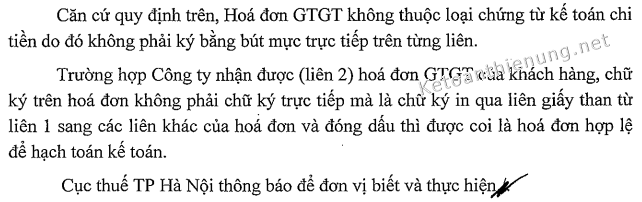
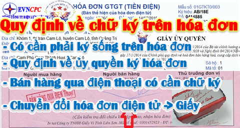

Những quy định về chữ ký trên hóa đơn trên hóa đơn GTGT, điện tử, bán hàng như: Có cần phải ký sống trên hóa đơn? Chữ ký trên hóa đơn có phải ký sống không? Hóa đơn phải có chữ ký người mua hàng không? Bán hàng qua điện thoại có cần chữ ký người mua hàng? Người mua hàng không lấy hóa đơn có cần chữ ký?...
Có cần phải ký sống trên hóa đơn GTGT.
Theo Luật kế toán số 88/2015/QH13 ngày 20/11/2015 của Quốc hội quy định:
+ Tại Điều 3 Giải thích từ ngữ
“3. Chứng từ kế toán là những giấy tờ và vật mang tin phản ánh nghiệp vụ kinh tế, tài chính phát sinh và đã hoàn thành, làm căn cứ ghi sổ kế toán.”
+ Tại Điều 19 quy định về ký chứng từ kế toán.
”1. Chứng từ kế toán phải có đủ chữ ký theo chức danh quy định trên chứng từ. Chữ ký trên chứng từ kế toán phải được ký bằng loại mực không phai. Không được ký chứng từ kế toán bằng mực màu đỏ hoặc đóng dấu chữ ký khắc sẵn. Chữ ký trên chứng từ kế toán của một người phải thống nhất. Chữ ký trên chứng từ kế toán của người khiếm thị được thực hiện theo quy định của Chính phủ.
2. Chữ ký trên chứng từ kế toán phải do người có thẩm quyền hoặc người được ủy quyền ký. Nghiêm cấm ký chứng từ kế toán khi chưa ghi đủ nội dung chứng từ thuộc trách nhiệm của người ký.
3. Chứng từ kế toán chi tiền phải do người có thẩm quyền duyệt chi và kế toán trưởng hoặc người được ủy quyền ký trước khi thực hiện. Chữ ký trên chứng từ kế toán dùng để chi tiền phải ký theo từng liên.”
+ Tại Điều 20 quy định về hóa đơn.
“1. Hóa đơn là chứng từ kế toán do tổ chức, cá nhân bán hàng, cung cấp dịch vụ lập, ghi nhận thông tin bán hàng, cung cấp dịch vụ theo quy định của pháp luật.”
Danh mục và biểu mẫu chứng từ kế toán Ban hành kèm theo Thông tư 200/2014/TT-BTC.
Tên các chứng từ kế toán thuộc loại tiền tệ.
| 1 | Phiếu thu | 01-TT |
| 2 | Phiếu chi | 02-TT |
| 3 | Giấy đề nghị tạm ứng | 03-TT |
| 4 | Giấy thanh toán tiền tạm ứng | 04-TT |
| 5 | Giấy đề nghị thanh toán | 05-TT |
| 6 | Biên lai thu tiền | 06-TT |
| 7 | Bảng kê vàng tiền tệ | 07-TT |
| 8 | Bảng kiểm kê quỹ (dùng cho VND) | 08a-TT |
| 9 | Bảng kiểm kê quỹ (dùng cho ngoại tệ, vàng tiền tệ) | 08b-TT |
| 10 | Bảng kê chi tiền | 09-TT |
KẾT LUẬN:
=> Căn cứ quy định trên, Hóa đơn GTGT không thuộc loại chứng từ kế toán chi tiền do đó không phải ký bằng bút mực trực tiếp trên từng liên.
Trường hợp Công ty xuất 02 hóa đơn GTGT cho khách hàng, chữ ký của thủ trưởng đơn vị không phải chữ ký trực tiếp mà là chữ ký in qua liên giấy than từ liên 1 sang các liên khác của hóa đơn thì được coi là hóa đơn hợp lệ để hạch toán kế toán.
(Công văn 80824/CT-TTHT ngày 18/12/2017 của Cục Thuế TP. Hà Nội )
Không bắt buộc ký trực tiếp trên từng liên hóa đơn

(Công văn số 55659/CT-TTHT ngày 9/8/2018 của Cục Thuế TP. Hà Nội)
TỨC LÀ:
- Nếu là hóa đơn: Chỉ cần ký trên liên 1 -> sau đó sẽ in sang các liên 2,3 -> Như vậy là hóa đơn hợp lệ.
- Nếu là chứng từ chi tiền -> Thì phải ký từng liên.
- Nếu là chứng từ chi tiền -> Thì phải ký từng liên.
--------------------------------------------------------------------
Tại Khoản 1 Điều 19 và Điều 20 Luật thuế kế toán số 88/2015/QH13 ban hành 20/11/2015 quy định:
"Điều 19. Ký chứng từ kế toán
1. Chứng từ kế toán phải có đủ chữ ký theo chức danh quy định trên chứng từ. Chữ ký trên chứng từ kế toán phải được ký bằng loại mực không phai. Không được ký chứng từ kế toán bằng mực màu đỏ hoặc đóng dấu chữ ký khắc sẵn. Chữ ký trên chứng từ kế toán của một người phải thống nhất. Chữ ký trên chứng từ kế toán của người khiếm thị được thực hiện theo quy định của Chính phủ."
-----------------------------------------------------------------
Quy định về ủy quyền ký hóa đơn GTGT
Căn cứ Thông tư số 39/2014/TT-BTC ngày 31/03/2014 của Bộ Tài chính hướng dẫn thi hành Nghị định số 51/2010/NĐ-CP ngày 14/5/2010 và Nghị định số 04/2014/NĐ-CP ngày 17/01/2014 của Chính phủ quy định về hóa đơn bán hàng hóa, cung ứng dịch vụ:
+ Tại khoản 1 Điều 4, Chương I hướng dẫn cụ thể về nội dung trên hóa đơn đã lập:
“1. Nội dung bắt buộc trên hóa đơn đã lập phải được thể hiện trên cùng một mặt giấy…
a) Tên loại hóa đơn.
b) Ký hiệu mẫu số hóa đơn và ký hiệu hóa đơn.
c) Tên liên hóa đơn.
d) Số thứ tự hóa đơn.
đ) Tên, địa chỉ, mã số thuế của người bán;
e) Tên, địa chỉ, mã số thuế của người mua;
g) Tên hàng hóa, dịch vụ; đơn vị tính, số lượng, đơn giá hàng hóa, dịch vụ; thành tiền ghi bằng số và bằng chữ.
h) Người mua, người bán ký và ghi rõ họ tên, dấu người bán (nếu có) và ngày, tháng, năm lập hóa đơn.
i) Tên tổ chức nhận in hóa đơn.
k) Hóa đơn được thể hiện bằng tiếng Việt.
+ Tại khoản 2d, Điều 16, Chương III hướng dẫn cách lập một số tiêu thức cụ thể trên hóa đơn:
“d) Tiêu thức “người bán hàng (ký, đóng dấu, ghi rõ họ tên)”
Trường hợp thủ trưởng đơn vị không ký vào tiêu thức người bán hàng thì phải có giấy ủy quyền của thủ trưởng đơn vị cho người trực tiếp bán ký, ghi rõ họ tên trên hóa đơn và đóng dấu của tổ chức vào phía trên bên trái của tờ hóa đơn.”
Căn cứ quy định nêu trên, Cục thuế TPHN trả lời theo nguyên tắc sau:
+ Trường hợp người đại diện pháp luật, thủ trưởng đơn vị không ký vào tiêu thức “người bán hàng” thì phải có giấy ủy quyền cho người trực tiếp bán hàng ký ghi rõ họ tên trên hóa đơn và đóng dấu của tổ chức vào phía bên trái của tờ hóa đơn theo quy định tại Khoản 2(d) Điều 16 Chương III Thông tư số 39/2014/TT-BTC ngày 31/03/2014 của Bộ Tài chính.
+ Đối với trường hợp trên hóa đơn GTGT của đơn vị có đồng thời cả 2 tiêu thức ''người bán hàng (ký, ghi rõ họ tên)” và “Thủ trưởng đơn vị (ký, đóng dấu, ghi rõ họ tên)” nếu thủ trưởng đơn vị đã ký tại tiêu thức “Thủ trưởng đơn vị” thì không cần ký vào tiêu thức “người bán hàng” trên hóa đơn và đóng dấu của tổ chức vào phía bên trái của tờ hóa đơn.
+ Nếu trên hóa đơn không có tiêu thức “người bán hàng” mà thay vào đó là “người lập” hay “thủ trưởng đơn vị” nếu các chỉ tiêu trên hóa đơn đầy đủ, đảm bảo không dẫn tới cách hiểu sai lệch nội dung của hóa đơn thì hóa đơn đó vẫn được coi là hóa đơn hợp lệ để hạch toán kế toán.
(Theo Công văn 46422/CT-TTHT ngày 10/07/2017 của Cục thuế TP Hà Nội)
Ký ủy quyền hóa đơn, lỡ đóng dấu lên chữ ký có được chấp nhận?
Theo quy định tại điểm d khoản 2 Điều 16 Thông tư 39/2014/TT-BTC, hóa đơn ký theo ủy quyền chỉ được đóng dấu treo (tức đóng dấu vào phía trên bên trái tờ hóa đơn), không đóng lên chữ ký.
- Theo Công văn này, trường hợp người ĐDPL của Công ty ủy quyền cho Tổng quản lý (cấp phó trực tiếp) ký toàn bộ các giấy tờ bao gồm cả hóa đơn, nhưng khi lập hóa đơn, Tổng quản lý đã ký vào tiêu thức người bán hàng và đóng dấu trực tiếp lên chữ ký, nếu các chỉ tiêu khác ghi đầy đủ, đảm bảo không dẫn tới cách hiểu sai lệch nội dung hóa đơn thì vẫn được chấp nhận.
(Công văn số 41338/CT-TTHT ngày 18/6/2018 của Cục Thuế TP. Hà Nội)
Không quy định về số lượng ủy quyền ký hóa đơn:
Theo quy định tại điểm d khoản 2 Điều 16 Thông tư 39/2014/TT-BTC, trường hợp thủ trưởng đơn vị không ký vào tiêu thức người bán hàng thì lập giấy ủy quyền cho người trực tiếp bán ký, ghi rõ họ tên trên hóa đơn.
- Không có quy định về số lượng người bán hàng được ủy quyền ký hóa đơn. Do đó, thủ trưởng công ty có thể ủy quyền cho một hoặc nhiều người bán hàng ký hóa đơn tùy theo nhu cầu.
(Công văn số 1984/CT-TTHT ngày 15/1/2018 của Cục Thuế TP. Hà Nội)
Mẫu ủy quyền xem thêm: Mẫu ủy quyền ký hóa đơn GTGT
--------------------------------------------------------------------------------
--------------------------------------------------------------------------------
Hóa đơn điện tử có cần chữ ký người mua
Theo hướng dẫn tại Công văn 2402/BTC-TCT ngày 23/2/2016, trường hợp doanh nghiệp có đủ hồ sơ chứng từ chứng minh việc cung cấp hàng hóa, dịch vụ với bên mua như hợp đồng, phiếu xuất kho, biên bản giao nhận, biên nhận thanh toán, phiếu thu... thì khi lập hóa đơn điện tử được miễn chữ ký của bên mua.
Đối với hóa đơn điện tử chuyển đổi sang hóa đơn giấy mà số lượng hàng hóa, dịch vụ bán ra nhiều hơn số dòng của một trang hóa đơn thì được xử lý tương tự trường hợp lập hóa đơn tự in hướng dẫn tại khoản 1 Điều 19 Thông tư 39/2014/TT-BTC.
(Công văn số 8610/CT-TTHT ngày 6/3/2018 của Cục Thuế TP. Hà Nội)
Chi tiết quy định hóa đơn điện tử có cần chữ ký người mua, đóng dấu và chuyển đổi từ hóa đơn điện tử sang hóa đơn giấy xem tại đây: Hóa đơn điện có cần chữ ký đóng dấu
-----------------------------------------------------------------
Bán hàng qua điện thoại không cần chữ ký người mua hàng- Trường hợp Công ty CP máy- thiết bị dầu khí thực hiện bán hàng, cung cấp dịch vụ cho khách hàng ở các tỉnh, thành phố khác nhau. Tuy nhiên, do khách hàng ở các tỉnh, thành phố ở xa không thể ký trực tiếp trên 03 liên tại tiêu thức người mua hàng trên hóa đơn GTGT thì nếu hoạt động sản xuất kinh doanh của Công ty gắn với thực tế bán hàng qua điện thoại thì khi lập hóa đơn, tại tiêu thức “người mua hàng” Công ty ghi rõ là bán hàng qua điện thoại, người mua hàng không nhất thiết phải ký, ghi rõ họ tên trên hóa đơn.
(Công văn số 1522/CT-TTHT ngày 10/1/2018 của Cục Thuế TP. Hà Nội)
Chi tiết xem thêm: Cách viết hóa đơn bán hàng qua điện thoại
-------------------------------------------------------------------------
Khách hàng không lấy hóa đơn vẫn phải xuất hóa đơn:Quy định về việc viết hóa đơn khi khách hàng không lấy hóa đơn các bạn xem tại đây nhé: Khách hàng không lấy hóa đơn
----------------------------------------------------------------------------
Kế toán Diệu Tâm chúc các bạn Thành công
